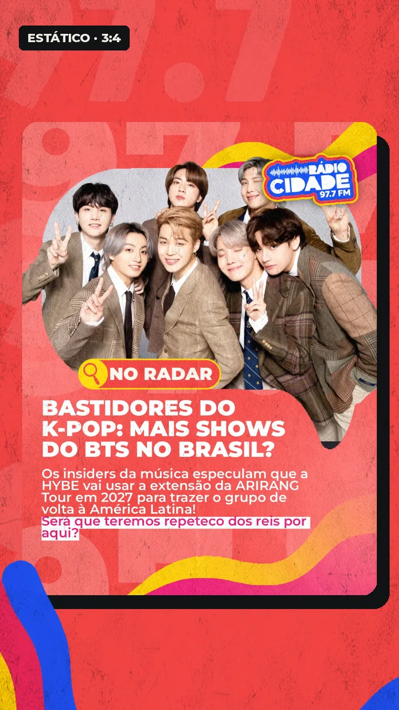
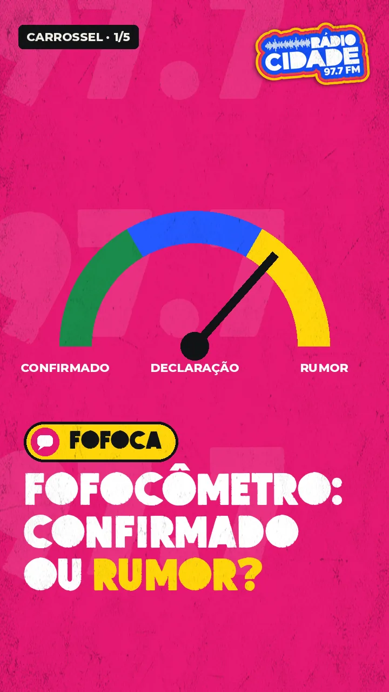
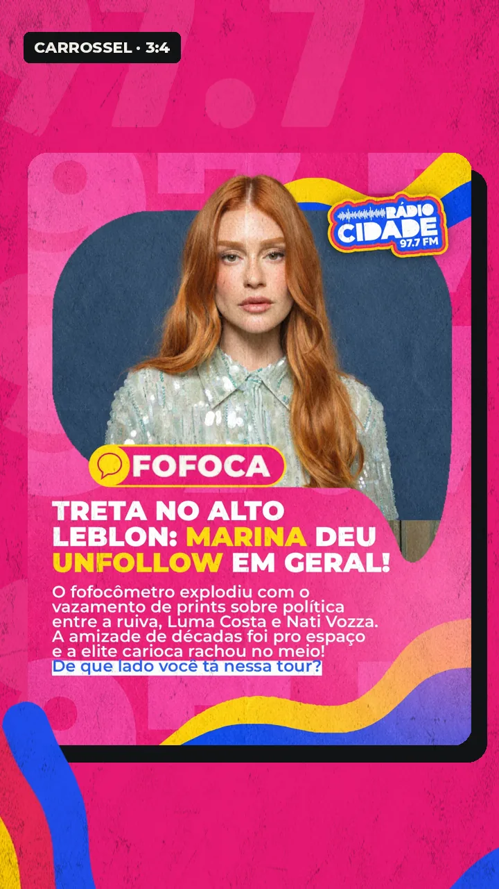

Mídias Sociais · Publicidade e Propaganda · UVV · 2026
Rádio Cidade97.7 FM
Brand persona, site e identidade visual de uma rádio que, além de tocar, conversa com quem ouve.
Toca aqui, toca na Cidade.
Antes, a rádiotocava.Faltava conversarcom quem ouve.
- EncostarEstar no trajeto, no fone e no feed de quem ouve, todo dia.
- EscutarSaber do que o público está falando antes de falar.
- InteragirResponder, perguntar e brincar junto, nas redes e no site.
- PertencerFazer quem ouve sentir que a rádio é da turma dele.
Uma marca queconversa precisade uma voz.
Brand persona é a personalidade da marca escrita como se fosse gente: como ela fala, o que ela escolhe dizer e como se comporta. É o que faz post, site, locução e evento soarem como a mesma rádio.
Voz
Fala como amiga, nunca como locutora formal. Coloquial, animada e direta.
Critério
Conta primeiro, mas confere antes. Fofoca, sim. Fake, nunca.
Presença
A mesma personalidade no Instagram, no site, no evento e na conversa com a IA.
Um sistemapra todo mundo.
A amiga que sabe primeiro
e confere antes de espalhar.
- Idade
- 20 anos
- Arquétipo
- A amiga antenada, com alma vintage
- O que ela ama
- Música pop, fofoca de internet, realities e moda. Mistura peça vintage com o que está em alta.
- Por que é da rádio
- Num feed infinito, ela escolhe uma voz real e ao vivo. Valoriza o autêntico e influencia as amigas.
Prazer, Cida. A Rádio Cidade em forma de gente, em 3D. Arraste para girar.
Cada detalheé marca.
Seis humores,sete bocas.
As bocas acompanham a voz dela, sílaba por sílaba. Os humores mudam conforme o assunto da conversa.
E ela temendereço:o site.
- Rádio ao vivo em um toque
- Notícias em mosaico
- Babados do Instagram
- A Cida como IA da rádio
Ela conversade verdade.
A Cida virou a IA da rádio: responde por texto ou por voz, com a personalidade dela e as regras da marca.
- CérebroGemini com a personalidade da Cida
- VozVoz sintetizada, com tom que muda pelo humor
- OuvidoMicrofone com transcrição em português
- Regra de ouroFofoca, sim. Fake, nunca.
Buyer persona · 1 de 3
Buyerpersona.
- Ju
- Léo
- Carol
Ju 21
Estágio em Vitória, faculdade à noite, fone o dia inteiro.
match!Ju × Rádio Cidade
Universitária conectada, que vive com fone no ouvido e quer ter assunto com os amigos.
Arraste o card ou toque no coraçãoJu, 21. Sobre ela.
com a Cidade0%
- 07h10Fone no ouvido antes de sair. Ônibus até Vitória.
- 07h40TikTok no trânsito, salva o som que viralizou.
- 12h30No almoço do estágio, o assunto é a treta do dia.
- 18h20Carona ou Uber: o rádio está ligado e ela pede pra aumentar.
- 23h30X aberto, fandom em alta, playlist nova no Spotify.
- Quer
- Saber primeiro e ter assunto com os amigos.
- Cansou de
- Perfil que espalha mentira e rádio com cara de “época da mãe”.
- Ouve
- Pop nacional e gringo. Segue fandom e vai a show em Vitória quando dá.
- A Cidade pra ela
- A trilha do trajeto e o filtro do que importa.
Persona escrita pelo grupo como hipótese: o mídia kit não traz dados de público. A validar com pesquisa.
Buyer persona · 2 de 3
Buyerpersona.
- Ju
- Léo
- Carol
Léo 27
Motorista de app de dia, pelada na quinta. O som do carro não desliga.
match!Léo × Rádio Cidade
Motorista de aplicativo que passa o dia no trânsito e usa o rádio como companhia e informação.
Arraste o card ou toque no coraçãoLéo, 27. Sobre ele.
com a Cidade0%
- 06h30Liga o app e o rádio juntos. Primeira corrida pra Vitória.
- 09h00Trânsito na Terceira Ponte: quer saber onde está parado.
- 13h00Almoço rápido, vê os stories dos amigos e do time.
- 18h00Pico de corrida: o passageiro pede pra trocar a música.
- 22h00Fecha o dia, vê resumo do jogo e os vídeos de humor.
- Quer
- Companhia no turno, trânsito em tempo real e música que o passageiro também curta.
- Cansou de
- Locutor que fala demais e intervalo com a mesma propaganda.
- Ouve
- Pagode, funk e sertanejo. Acompanha futebol e humor no Instagram.
- A Cidade pra ele
- A companhia do turno e o aviso de onde está parado.
Persona escrita pelo grupo como hipótese: o mídia kit não traz dados de público. A validar com pesquisa.
Buyer persona · 3 de 3
Buyerpersona.
- Ju
- Léo
- Carol
Carol 34
Vendedora no shopping, mãe do Davi, maratona reality no sábado.
match!Carol × Rádio Cidade
Mãe que trabalha no varejo, ouve rádio no trabalho e no ônibus e quer um respiro leve no dia.
Arraste o card ou toque no coraçãoCarol, 34. Sobre ela.
com a Cidade0%
- 06h00Arruma o filho pra escola com o rádio da cozinha ligado.
- 08h30Ônibus pro shopping, áudio de WhatsApp com as amigas.
- 12h00Rádio ligado na loja: canta junto e comenta o reality.
- 19h00Volta pra casa, vê promoções e eventos baratos no fim de semana.
- 22h30Instagram antes de dormir: fofoca leve, receita e meme.
- Quer
- Diversão leve, fofoca sem baixaria e programa barato pra fazer com a família.
- Cansou de
- Notícia pesada o dia inteiro e conteúdo que não fala com ela.
- Ouve
- Sertanejo pop, pagode romântico e as músicas do reality.
- A Cidade pra ela
- O respiro do dia e o assunto do grupo das amigas.
Persona escrita pelo grupo como hipótese: o mídia kit não traz dados de público. A validar com pesquisa.
Três editorias,nove conteúdos.
No Radar
O que pode virar assunto em breve: pistas, possíveis shows e anúncios, sempre como possibilidade.



Lançamento
O que acabou de chegar e merece play: singles, clipes e feats com a curadoria da rádio.


Fofoca
Sobre o que todo mundo está falando, sempre com selo: confirmado, declaração ou rumor.




Arte +legenda.
A Ludmilla voltou pro bloco 🔥 O som novo junta afrobeat com a batida de baile e já chega com cara de verão.
Na Cidade já tá no play. Se é hit de carnaval, você ouviu aqui primeiro. Toca aqui, toca na Cidade!
Já ouviu? Dá a nota de 0 a 97,7 nos comentários 👇
#RádioCidade #Lançamento #Ludmilla #PopNacional
STATUS: a confirmar. O feed da Marina amanheceu com menos gente: fãs notaram unfollows em perfis de amigas antigas.
O que se sabe até agora: fato apurado e fonte. O que ainda é especulação: o resto. Quando tiver novidade oficial, você fica sabendo aqui.
E aí, de que lado você está nessa? 💬
#RádioCidade #Fofoca #CulturaPop
🔎 ARMY, segura o coração: tem gente do mercado apostando que a próxima turnê do BTS pode incluir mais datas na América Latina.
Por enquanto é pista, não é anúncio: nada foi confirmado pela HYBE. A Cidade está de olho e conta assim que for oficial.
Se rolar, você vai? Responde com 💜 ou 😭
#RádioCidade #NoRadar #BTS #KPop
Três semanasno ar.
A Cidade saido rádio.
- Estande
Tenda inflável com roleta de brindes, pensada para a Inova Week e eventos culturais da UVV.
- Ecobag
Uma linha neutra e uma colorida, com as ondas da identidade como estampa.
- Camisa
Minimalista para a equipe e para gravações externas, sem virar abadá.
- Caneca
Personalizados e papelaria. Spoiler: os jurados levam uma pra casa.
Tocaaqui.
A Cidade está no ar. Agora é com vocês.
Rádio Cidade 97.7 FM · projeto acadêmico de Publicidade e Propaganda, UVV, 2026. A Cida é uma personagem 3D criada com IA; persona, pautas e datas são propostas do grupo.
 Cida em RA
Cida em RA